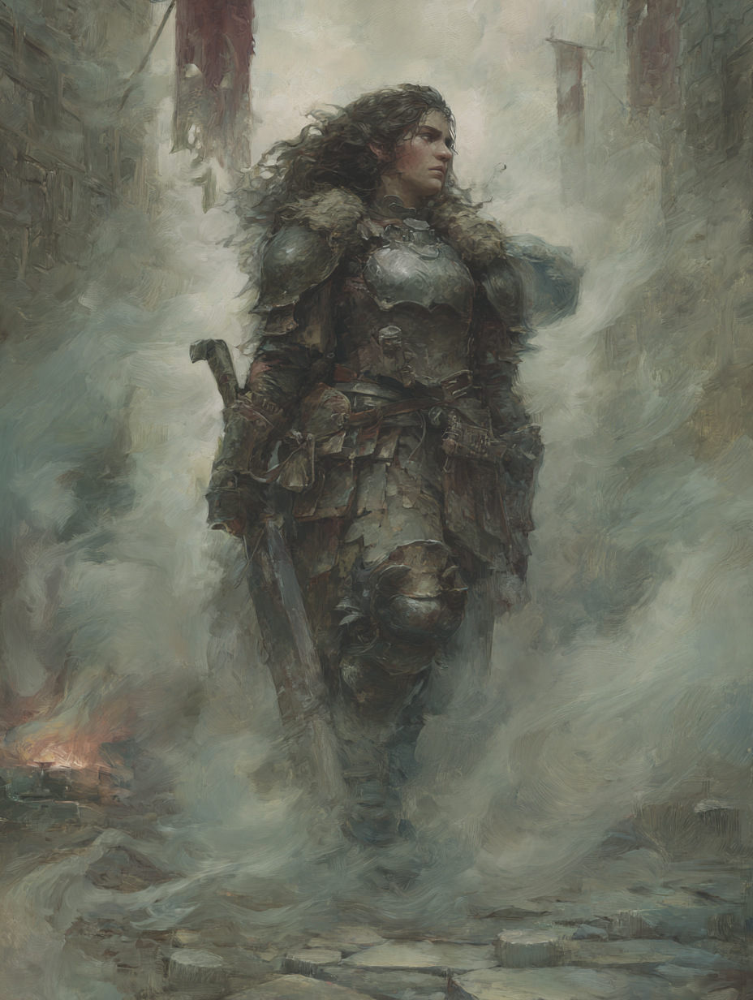

|
Ever Vigilant
Sarru does not relax. She has been a guardian of Ulmira's Step long enough to know that the moment you stop watching is the moment something comes through. She has not stopped watching in years.
|
+2
|
|
Appreciate the Beauty in the Ephemeral
The Pyre burns and goes out. The Pyre is lit again. She has tended it through enough cycles to understand this as a form of argument about permanence — one she finds more convincing the longer she stands in the smoke.
|
+2
|
Appearance
Sarru is Drakenn — compact and dense in the way of Ridgeborne Dwarves, built close to the ground with a centre of gravity that makes her extremely difficult to move. Her hair is dark and runs long, usually loose around her shoulders in a way that seems at odds with her armor until you realise she simply doesn't care about the inconvenience. She is perpetually soot-stained in the particular way of someone who tends a fire as a vocation, not an accident. Her face is one that notices everything and confirms nothing.
Manner
Gravel-voiced and evidence-obsessed. She does not accept claims she cannot trace to a source. She has argued this position with Ygva, with Vaetra, with the settlement elders, with herself in the long quiet hours of the Pyre watch. She is not contrarian — she is simply unwilling to pretend that belief is the same thing as knowledge. This is not a popular position in a settlement built around a sacred fire, and she holds it anyway.
The Pyre
The Sacred Pyre is not a metaphor for her. It is a fire. It requires fuel, maintenance, a consistent watch, and people who understand that letting it go out is a choice with consequences that outlast the people who made it. She became a Pyrekeeper because no one else was going to do it properly, and she has discovered, over years of smoke and ash, that she is genuinely good at the permanent attention it requires. Whether she believes in what the Pyre represents is a question she declines to answer directly. She tends it. That is what she does.
The Secret Key
She carries a key she has not explained. It does not fit any lock in Ulmira's Step that she has tried it against, and she has tried most of them. She found it in the ash below the Pyre during a deep cleaning, three years ago. She has not told the elders. She is not sure why she hasn't told them, which is itself a data point she finds troubling.
Born in Ulmira's Step to Drakenn parents — stonecutters, both, who understood permanence as the highest value and taught her to look for cracks in anything that claimed to be solid. She grew up in the circle alongside Ygva, Vaetra, Kelun, Tamros, and Mellan, and distinguished herself early as the one most likely to ask where a story came from and least likely to accept everyone knows as an answer.
She attended Renavir's lessons with more skepticism than most of his students but more discipline than all of them — she checked his citations, which he found irritating and eventually useful. Where Vaetra consumed the lector's texts as ammunition, Sarru consumed them as material to be tested. She and Vaetra argued constantly. They have reached the stage of argument where both sides are sharpened by it.
When the circle began to scatter — Mellan north, Tamros into the titan, Ygva up the mountain — Sarru stayed. Not from inertia; from a deliberate assessment that Ulmira's Step needed someone who would not leave it, and that she was suited to be that person. She trained as a guardian, took on the Pyrekeeper role, and has spent five years becoming the settlement's primary answer to the question of what stands between it and whatever comes down from the high places.
She is good at this. She does not always find it sufficient.